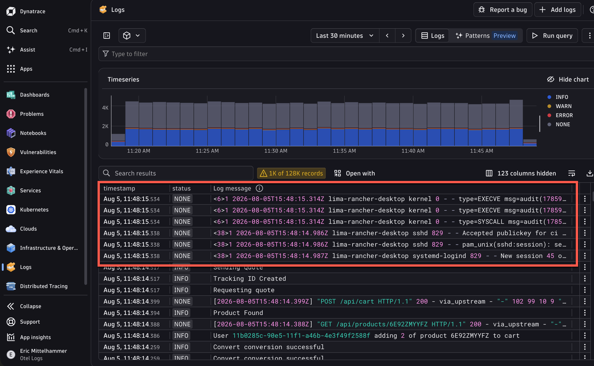
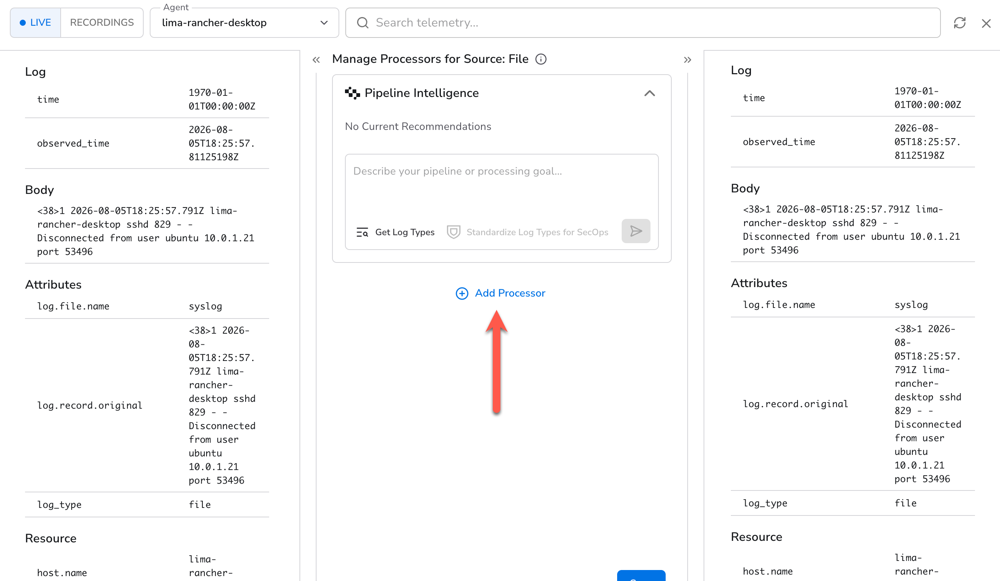
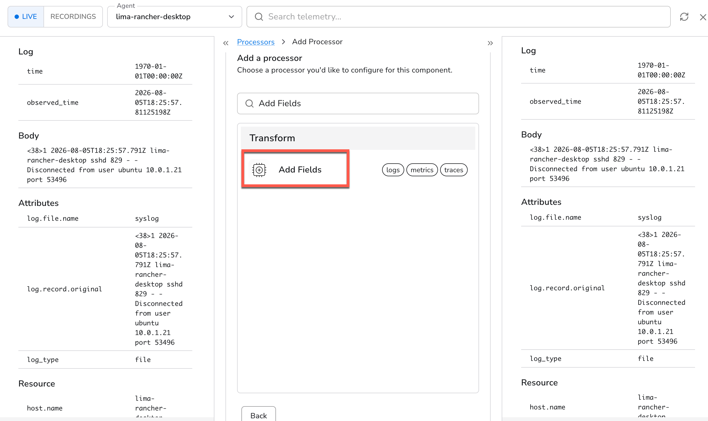
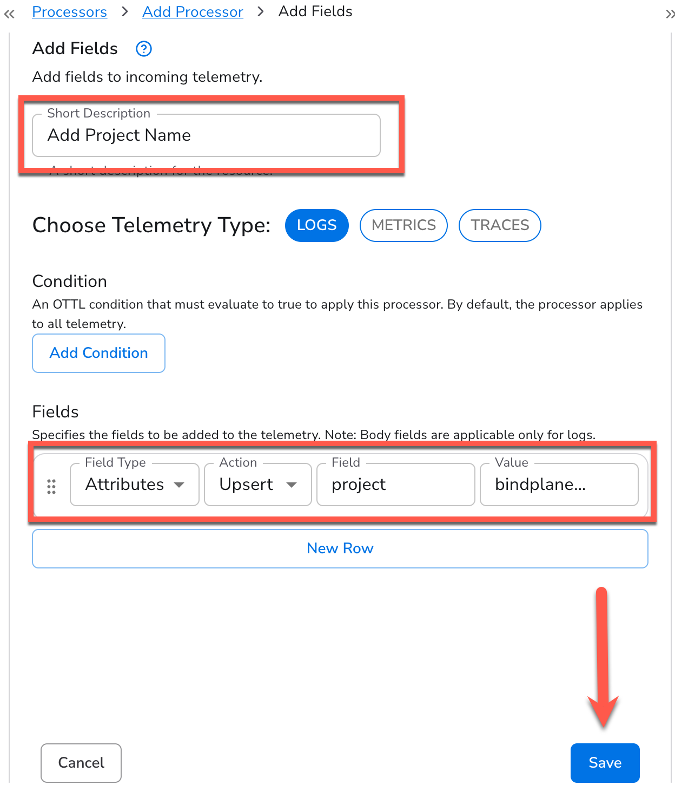
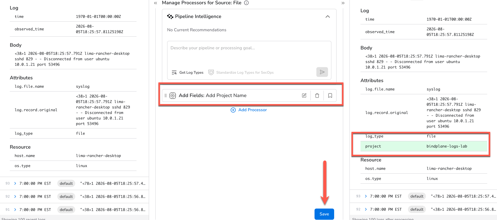
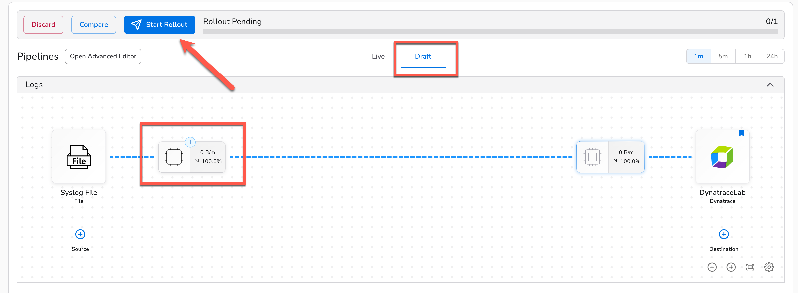
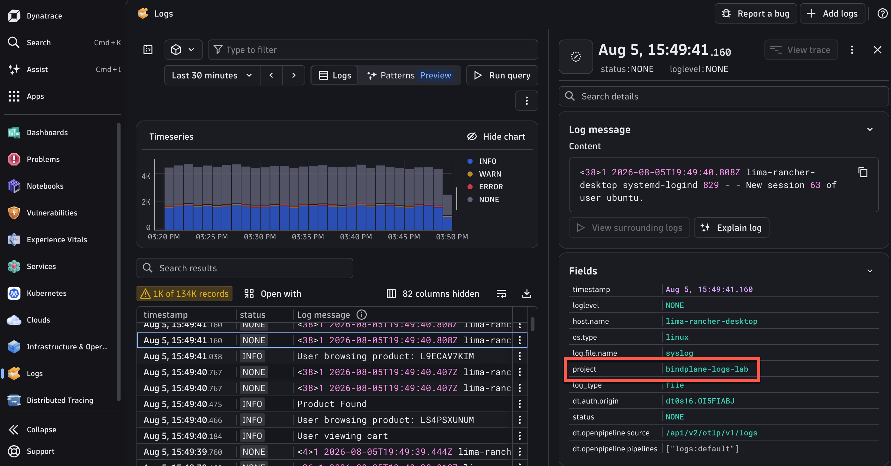
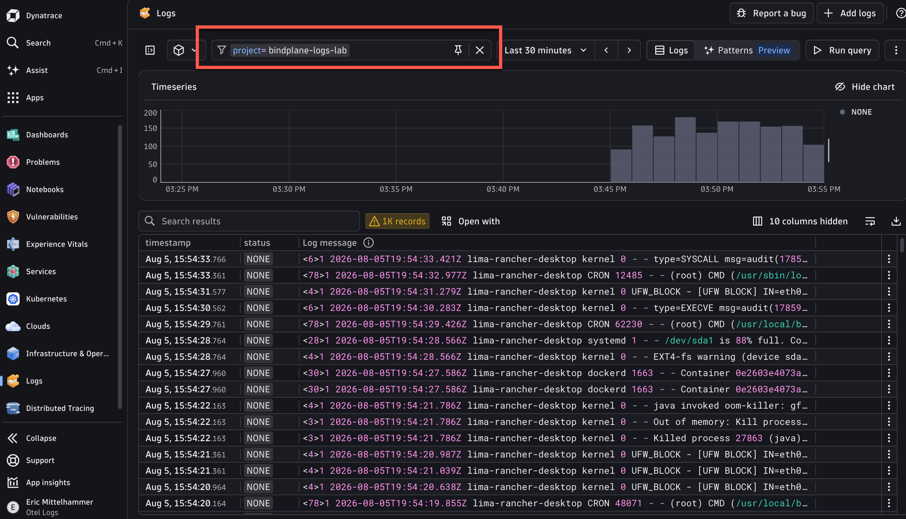

5. Processors: Add a Field
Adding a Field using a Bindplane Processor#
add some text about what processors are for
Take a look at our Syslogs in Dynatrace. They're mixed in with everything else that is streaming in to our Dyntrace environment.

Let's use a Bindplane processor to help us sort this out.
1. Open the Processors Configuration#
Beginning at you logs pipeline configuration, click on the processor configuration node for the Syslog file source.
{kind=link}
2. View and Compare Live Logs#
Here we can see a live preview of the logs that are passing through this node. This will allow us to test and debug parsers with live data before we apply our changes!
Click on one of the incoming log messages on the left, and the corresponding outgoing log will automatically expand on the right. (Of course, they will be identical, because we don't have any processors configured yet)

Click "Add Processor" and continue to the next step.
3. Find the "Add Fields" Transform Processor#
Search for "Add Fields" in the search box, and find the result "Add Fields", which is a Transform type processor

Click on the processor name to begin configuring it.
4. Configure the Add Fields Processor#
We are going to add a field to all logs used in this lab so that they are easily filterable in Dynatrace.
- Add the Short Description "Add Project Name"
- For the field itself, use
projectfor the field name, andbindplane-logs-labfor the field value. Keep the defaults for the other values.
A Unified Telemetry Pipeline Built on OpenTelemetry
Because Bindplane manages OpenTelemetry components, our Add Field follows the OpenTelemetry Specification, which you may recognize. We can change the field type to a Resource field, or the Body of the message altogther, as well as the attribute type we're adding here. We can also choose how to modify the record: Insert, Update or Upsert.

3. Click "Save", and let's preview our changes5. Preview Changes#
Now we're back to our processor node configuration. We can see that our processer has been added. Expand one of the logs messages on the left. We can see what our log message would look like if passed through this node, with our new field!
Notice as well that Bindplane has enriched our logs by adding some fields such as the log_type as well as some OpenTelemetry Resource attributes.

Click the "Save" button at the bottom. We had previously saved our changes to the individual processor that we created. This will save all changes made to this processor node (if we added or edited multiple processors, for example).
6. Rollout to the Agent#
We're back at our configuration and we can see that our processor node is indicating that we have one processer now. But also notice that we're prompted to "Start Rollout" and that we are currenty viewing a draft version of our configuration.

Even though we've saved our changes to the configuration itself, the final step is to roll it out to the agents that use it (in our case, the singe agent we added).
Go ahead and click "Start Rollout" to push this change to the agent.
Infrastructure as Code
Notice the "Compare" button next to "Start Rollout". Clicking it will show you the underlying declarative YAML that is used to construct your configuration.
7. Filtering in Dynatrace#
Once the rollout is complete, switch to your Dynatrace environment and cick "Run Query" again to fetch the latest logs.
Click on one of the Syslog logs and see the detailed view on the right side of the window. There's our added field! Now we can use it to filter for any logs coming from this lab.

Add a filter to this view to see only our Bindplane Lab logs:

Perfect! Now we can focus on exactly what we need to. Think about how you'd use this feature with the logs you currently collect.